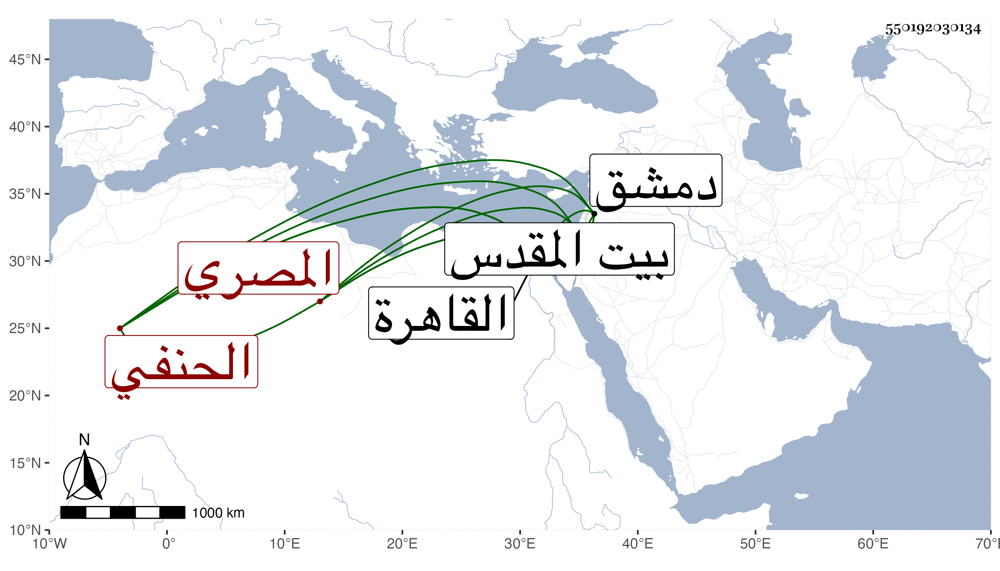

0902Sakhawi.DawLamic.ITO20230111-ara1.EIS1600.550192030134
Biography ID: 550192030134
84
أحمد بن علي بن قرطاي الشهاب أبو الفضل بن العلاء بن السيف المصري الحنفي سبط محمد بن بكتمر الساقي الحنفي ويعرف بسيدي أحمد بن بكتمر . ولد في يوم الأحد ثالث عشري شعبان سنة ست وثمانين وسبعمائة بالقاهرة ونشأ بها في ترف زائد ونعمة سابغة وثروة ظاهرة من أقطاع وأوقاف كثيرة جدا حتى أن غلته تزيد على عشرة دنانير كل يوم فيما قيل ومع ذلك فلا يزال في دين كثير لكونه يقتني الكتب النفيسة بالخطوط المنسوبة والجلود المتقنة وغير ذلك من الآلات البديعة والقطع المنسوبة الخط وقد اشتغل في الفنون وأتقن صنائع عدة وبرع في الفقه وكتب على العلاء بن عصفور فبرع في الكتابة وفنونها حتى فاق في المنسوب لا سيما في طريقة ياقوت ، وكان يقول إنه سمع على ابن الجزري حديث قص الأظفار وعلى القبابي وأكثر النظر في التاريخ والأدبيات وقال الشعر الجيد وهو ممن قرض سيرة المؤيد لابن ناهض . وكان فاضلا أديبا شاعرا لطيفا حسن المحاضرة صبيح الوجه محبا في الفضائل والتحف ذا ذهن وقاد مع السمن الخارج عن الحد بحيث لا يحتمله إلا الجياد من الخيل حتى أنه يقترح لأصحاب الصنائع أشياء في فنونهم فيقرون بأنها أحسن مما كانوا يريدون عمله وهو من أفكه الناس محاضرة وأحلاهم نادره وأحسنه وجها وأطهرهم وضاءة عنده من لطيفات الصفات بقدر ما عنده من ضخامة الذات ، وله وجاهة عند الأكابر ، ومحاسنه شتى غير أنه كان مسرفا على نفسه ينفد أوقاف جده ويستدين أيضا كما تقدم ، وقد قطن القدس ودمشق والقاهرة وتوفي بها في الطاعون ليلة الاثنين عاشر ذي القعدة سنة إحدى وأربعين وحمل جنازته ثمانية أنفس منهم أربعة بالخشب الذي يسمونه أقوابا رحمه الله . ومن نظمه مما كتبه عنه البقاعي :
| تسلطن ما بين الأزاهر نرجس | بما خص من إبريزه ولجينه |
| فمد إليه الورد راحة مقتر | فأعطاه تبرا من قراضة عينه |
ومن نظمه :
| إن إبراهيم أورى | في الحشا منه ضراما |
| ليت قلبي بلقاه | نال بردا وسلاما |
وقوله :
| رعى الله أيام الربيع وروضها | بها الورد يزهو مثل خد حبيبي |
| وإني وحق الحب ليس ترحلي | سوى لمكان ممرع وخصيب |
وعندي من نظمه بهامش الأنباء سوى هذا وقد أثنى عليه المقريزي .
